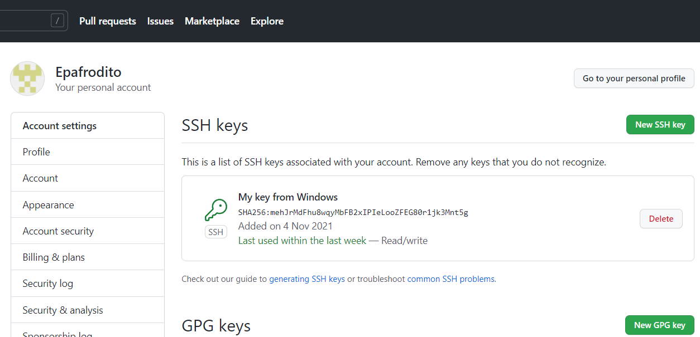

Перелік основних команд Git :
- git config --global user.name "name" - Команда для присвоєння імені.
- git config --global user.email "email" - Команда для присвоєння email.
- git init - Створює репозиторій в поточній директорії.
- git status - Показує нові файли або файли, які були змінені.
- git add - Додає файли в коміт.
- git commit -m - Створює коментар про зміни.
- git log - Показує всі комміти, від нових до старших.
- git checkout - Здійснює перемикання між гілками.
- git branch - Керуванна гілками.
- git push - Відправляє зміни на віддаленний репозиторій.
- git pull - Отримує зміни з репозиторію.
- git merge - Об'єднує гілки.
- git clone - Клонує проект з віддаленого репозиторію.
gitignore файл - це простий файл, який потрібний для приховування файлів та папок від системи контролю версій Git.
- git revert - Повернення комміту, шляхом створення нового.
- git reset - Відміна локольних змін в репозиторії.
- git rebase - Поєднує всі зміни в один в "патч", з подальшою інтеграцією в активну гілку.
- git cherry-pick - Переносить окремі комміти з одного місця репозиторію до іншого, зазвичай між гілками розробки та обслуговування.
- git stash - Приховує зміни у файлах та зберігає їх окремо, щоб в майбутньому їх можна було повернути.
My SSH keys
